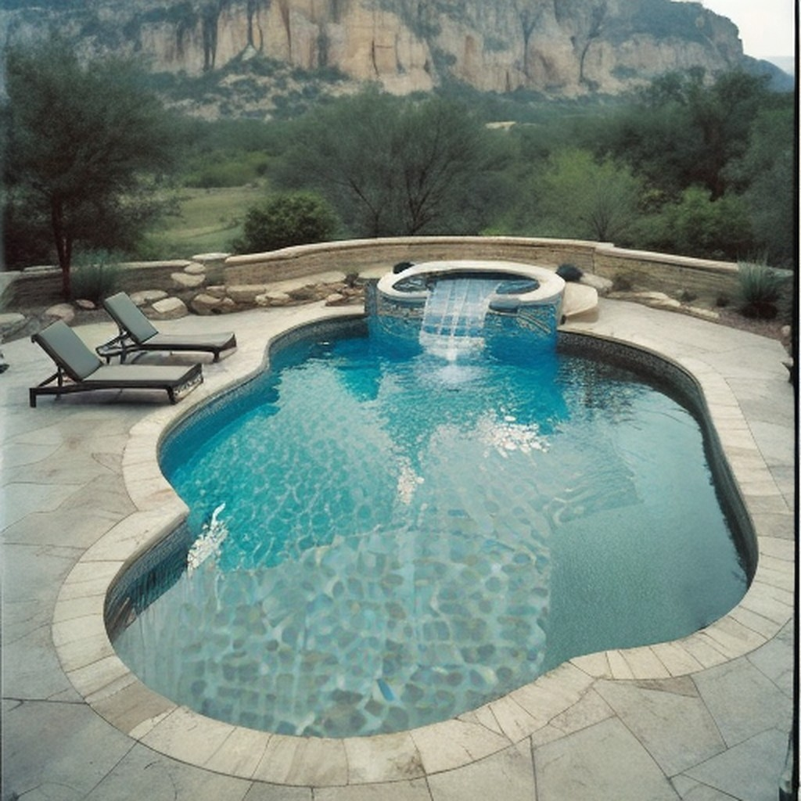

From Alamo Heights to the Hill Country, we deliver stunning pool resurfacing that withstands San Antonio's extreme 100°F+ summers and intense UV exposure.
Your pool shouldn't be a problem you manage. If you're dumping chemicals every week and still fighting algae, if the plaster feels rough enough to scratch skin, if the waterline is staining no matter how much you scrub — the surface is failing, not your chemistry.
Deteriorating plaster is San Antonio's most common pool problem, and it's one most homeowners catch too late. Once plaster breaks down, it becomes porous. Algae roots into the surface. Chemistry goes sideways no matter how much you spend on it. Chips and flaking start finding their way into your filter and pump. A resurface that costs $6,000 today becomes a structural repair that costs $18,000 if the shell is left exposed.
The pool that was supposed to be the centerpiece of your backyard becomes a liability — and every season you wait, it gets worse.
Most San Antonio homeowners don't resurface until the pool is embarrassing or actively damaging equipment. By that point, the math has already turned against them:
You're already paying the cost of a bad surface. You're just paying it in slow motion.
What We Offer
Built to endure San Antonio's punishing summers, limestone soil shifts, and year-round UV exposure.
Classic white plaster and marcite finishes that give your pool a clean, timeless look at an affordable price point.
Learn more →PebbleTec and PebbleSheen finishes that last 15–20 years — perfect for fighting Hill Country mineral-rich water.
Learn more →Diamond-polished quartz aggregate surfaces deliver unmatched sparkle and a smooth, comfortable feel underfoot.
Learn more →Waterline tile replacement and coping repairs that refresh your pool's edge and prevent water intrusion.
Learn more →Crack repair and structural fixes for damage caused by San Antonio's caliche and limestone soil movement.
Learn more →Complete pool makeovers including resurfacing, new tile, LED lighting, and modern water features.
Learn more →Most companies won't post this. We will, because a homeowner who understands the pricing makes a better decision and has better results.
Pool resurfacing in San Antonio typically ranges from $4,500 to $12,000 for a standard residential pool. Here's what drives the variance:
Condition of existing surface: If the old plaster is severely deteriorated or the shell has any structural cracks, prep work increases. We assess this during the free estimate and tell you upfront.
What's NOT driving the cost: our profit margin on your anxiety about not knowing. That's why we tell you the range before you ever sign anything.
Why Alamo Pool
We understand the unique challenges Texas pools face — from extreme heat to expansive soil.
San Antonio regularly exceeds 100°F in summer, which accelerates surface degradation. Our materials and application methods are specifically chosen to handle extreme UV and heat cycling.

San Antonio sits on limestone and caliche — soil types notorious for shifting and settling. We reinforce pool shells with structural solutions designed for our unique geology.

We live here, raise families here, and swim in these pools too. From the Riverwalk to Stone Oak, we've resurfaced pools in every corner of the city and surrounding Hill Country communities.
Our Process
From your first call to diving back in — here's exactly what to expect.
We answer, or we call you back within 1 hour. No voicemail runaround. If you can describe the problem — rough surface, staining, chipping, algae issues — we can usually give you a ballpark range before we even come out.
We come to you, inspect the pool surface, check the shell condition, and tell you honestly what it needs. Full resurface, patch repair, or just an acid wash — we give you a straight answer. No upsell pressure.
You get a written quote with everything itemized — surface type, drain and prep, labor, materials, cure timeline. No verbal estimates. You decide on your own timeline. We don't take a deposit until you've signed and scheduled.
Depending on your pool size and finish type, the job takes 4–7 days. We handle the full process: drain, chip and clean the old surface, apply the new finish, fill, and balance your chemistry for startup.
New plaster needs a 30-day break-in period with careful chemistry management. We walk you through it. After 30 days, the surface is fully cured and built to last 10–15 years.
Client Stories
Real reviews from San Antonio homeowners who trusted us with their pools.
"Our pool in Alamo Heights was in rough shape after 15 years of Texas sun. Alamo Pool Resurfacing did an incredible pebble finish and it looks absolutely stunning. Worth every penny."
"Fast, professional, and the crew cleaned up every day before leaving. Our quartz finish is gorgeous and the kids can't stay out of the pool."
"We had cracks from the limestone soil shifting under our pool. They fixed the structural issues first and then applied a beautiful marcite finish. Two years later, not a single problem."
"Best investment we've made in our home. The pool went from embarrassing to the highlight of our backyard. Neighbors keep asking who did it!"
"They talked us through every option and even helped us pick colors that matched our Hill Country landscape. Truly a first-class experience from start to finish."
"Had quotes from three companies. Alamo Pool was in the middle on price but miles ahead in communication and quality. They showed up when they said they would and delivered exactly what was promised."
Coverage Area
From downtown near the Riverwalk to the Hill Country suburbs — we've got you covered.
Serving a 40-mile radius of greater San Antonio
Pool surfaces in San Antonio face conditions that make most national resurfacing guides useless. San Antonio's hot summers, alkaline limestone-influenced water, and long 9-month pool season accelerate plaster breakdown faster than most Texas markets. Here's what we account for in every job:
We've resurfaced pools across San Antonio, Schertz, New Braunfels, Boerne, Helotes, Converse, Universal City, and surrounding Bexar County communities. If there's a pool condition specific to your neighborhood's water source or microclimate, we've seen it.
Common Questions
Where We Work
We serve the entire San Antonio metro and Hill Country region. Click your city for local pricing, project timelines, and information specific to your area's water conditions.
 Alamo Pool
Alamo Pool